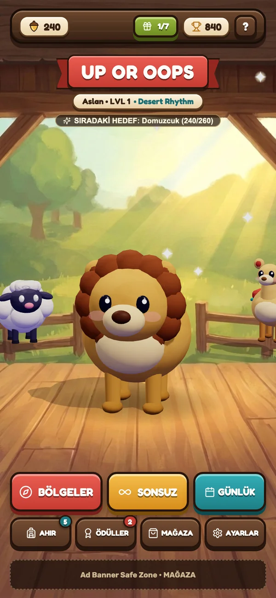
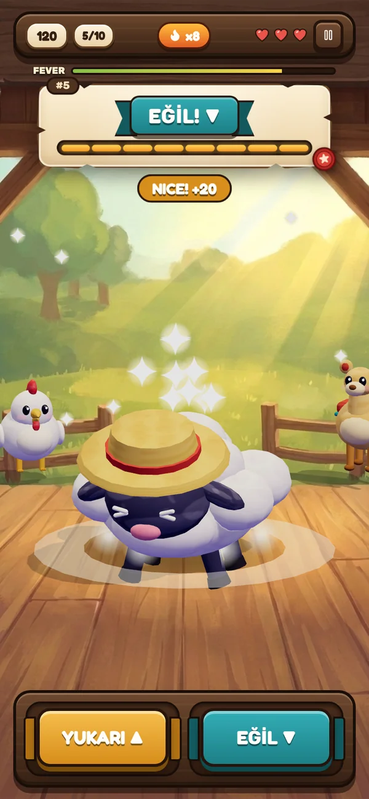
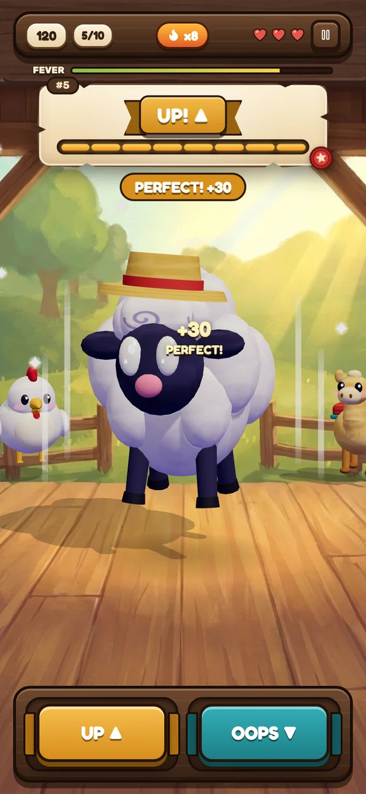
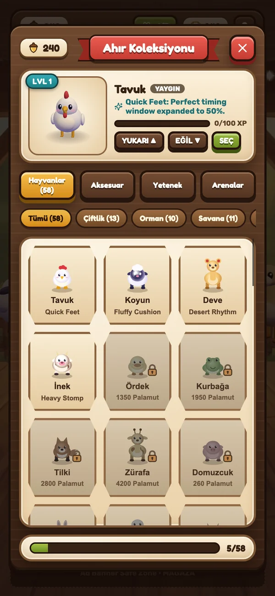
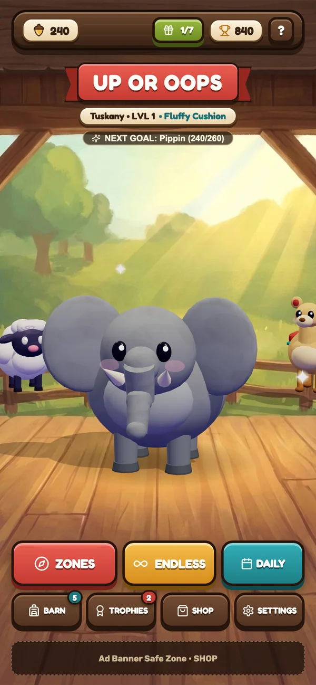
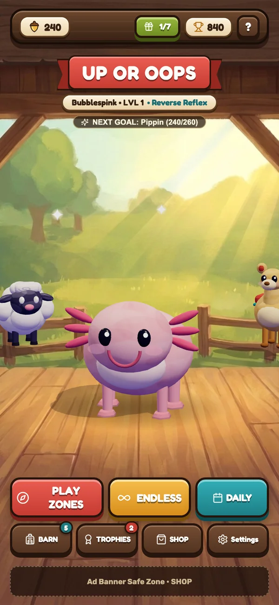

OYUN · iPHONE · 3D
Up or Oops
Zıpla, çömel, şaşırma—klasik Deve-Cüce'nin 3D hâli
Tabeladaki komuta anında tepki ver: UP görünce zıpla, OOPS görünce çömel. İşler hızlandıkça FLIP komutu her şeyi tersine çevirir, DOUBLE peş peşe iki hamle ister, FREEZE tek bir dokunuşu bile affetmez. Arka plandaki hayvanlar bilerek yanlış yapıp kafanı karıştırır; sen yalnızca tabelaya güven.
Sürüm 3.0 TestFlight'ta. 58 hayvan, 6 biyom, 6 dil ve doğal anatomik çömelme fiziğiyle test ediliyor. App Store bağlantısı yayında burada olacak.
01 · NASIL OYNANIR
İki düğme, beş kural
Alttaki iki büyük düğmeye dokun veya yukarı/aşağı kaydır. Tabela her zaman hayvanın üzerinde net durur; komutu anında okuyup doğru hamleyi yap:
Hayvanını havaya sıçrat; kulaklar, kanatlar ve hasır şapka fizikle tepki verir.
Bacaklar katlanır, baş öne eğilir; doğal hacim koruyan çömelme pozuyla yere yaklaş.
Mor kart geldiğinde refleksini kır: UP görünce çömel, OOPS görünce zıpla.
Aynı turda ardışık iki komutu ritimle yakala; hızlanırken elini sıcak tut.
Buz kartında hiçbir düğmeye basma; süre bitene kadar sakin kal.
Serin büyüdükçe Ateş (Fever) çubuğu dolar, tempo yükselir ve puan çarpanı katlanır. İstersen Rahat Tempo ve Hareketi Azalt seçenekleriyle daha sakin bir ritimde de oynayabilirsin.
02 · 58 HAYVAN, 6 BİYOM
Ahırdan sığınağa bütün sürü
Her hayvan sıfırdan 3D parçalarla şekillendirildi: koyunun hasır şapkası, filin kıvrılan hortumu, tukanın renkli gagası, aksolotl'un pembe solungaçları. 40 hayvanı oynayıp Palamut ve yıldız toplayarak açarsın; 18 özel hayvan isteğe bağlı Biyom Paketleri ve Çiftlik VIP ile koleksiyona katılır.
Çiftlik
Koyun, Horoz, İnek, Ördek, Keçi, Eşek, Domuzcuk, Lama, Hindi ve dostları.
Orman
Tilki, Kurbağa, Ayı, Geyik, Baykuş, Rakun, Kirpi, Sincap, Kunduz ve Porsuk.
Savana
Deve, Zürafa, Aslan, Fil, Zebra, Su Aygırı, Gergedan, Çita ve Mirket.
Tropik
Tukan, Flamingo, Tembel Hayvan, Panda, Koala, Kanguru, Kapibara ve Lemur.
Kutup
Penguen, Kutup Ayısı, Fok, Mors, Kar Baykuşu, Kutup Tilkisi ve Ren Geyiği.
Sığınak
Aksolotl, Kızıl Panda, Narval, Tek Boynuzlu, Kızıl Geyik, Ejderha ve Anka.
Adil oyun kuralı: bütün hayvan pasifleri dengelidir; ilk hayvanla bile 20 bölgenin tamamı üç yıldızla bitirilebilir.
03 · DÖRT DÜNYA VE MODLAR
20 bölge, Sonsuz ve Günlük Meydan Okuma
- 01–05Güneşli Ahır
- 06–10Altın Hasat
- 11–15Kamp Ateşi Ormanı
- 16–20Yayla Festivali
SAHTE KALABALIK
İleri bölgelerde arka plandaki hayvanlar bilerek ters hareket edip seni şaşırtmaya çalışır.
SONSUZ MOD
Süre giderek daralır, tüm mekanikler karışır; kişisel rekorunu ne kadar uzağa taşıyabilirsin?
GÜNLÜK MEYDAN OKUMA
Her gün aynı sabit tohumla herkes için aynı parkur; tek şans, günlük seri ve ekstra palamut.
04 · EKRANLAR
Oyundan kareler






05 · YAPIM NOTLARI
Nasıl yapıldı?
Three.js, React ve TypeScript ile yazıldı; Capacitor üzerinden iPhone'a derleniyor. 58 hayvanın hiçbiri hazır 3D model değil—her biri ayrı anatomik parçalarla kod içinde şekillendirildi. Sabit 120 Hz fizik adımı bacak katlanmasını, gövde eğimini, kuyruk ve kulak salınımını hacim koruyarak hesaplar; hayvanlar yapay biçimde ezilmeden doğal hareket eder. Tüm ses efektleri ve ritmik çiftlik müzikleri Web Audio API ile canlı sentezleniyor.
Geliştirici: Ali Emre Büyükkol.
06 · DESTEK
Yardım ve gizlilik
Hesap veya giriş gerekmez; ilerlemen, kazandığın yıldızlar ve koleksiyonun yalnızca cihazında saklanır. Ücretsiz sürümde isteğe bağlı ödüllü reklamlar, menü bandı ve ilk turlardan sonra aralıklı geçiş reklamları yer alır. Reklamları Kaldır, Başlangıç Paketi, Biyom Paketleri ve Çiftlik VIP tek seferlik satın almalardır; abonelik yoktur.